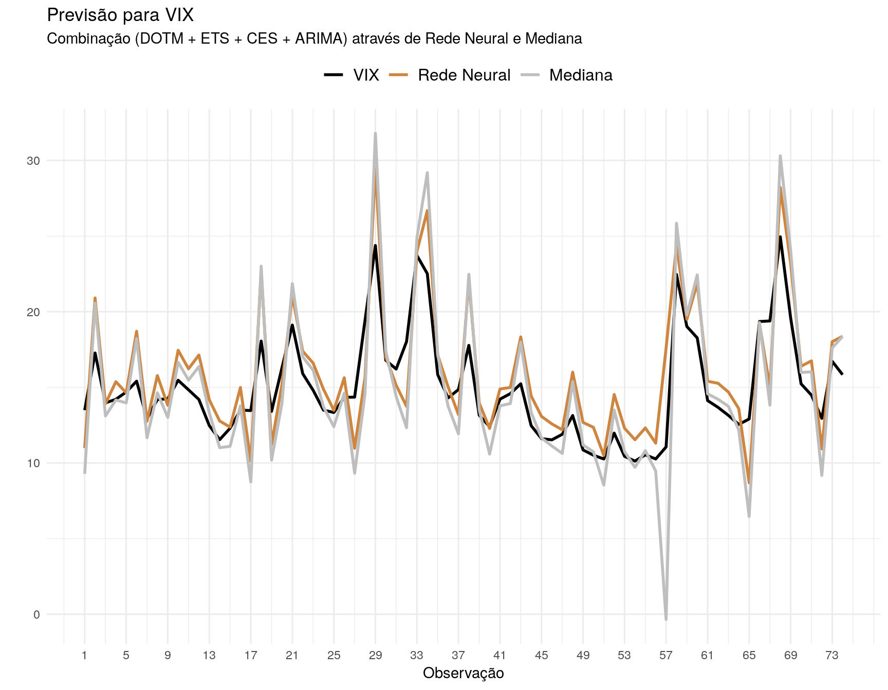

No post “Combinando modelos de previsão”, apresentei duas formas simples de combinar modelos de previsão. A primeira delas envolvia obter uma combinação linear das previsões individuais de cada modelo, através de um método de otimização (OLS, por exemplo, ou equivalente). O segundo método utilizava a mediana das projeções dos modelos individuais. Embora operacionalmente mais simples, esta última abordagem performou melhor que a anterior – um resultado nada surpreendente, pois existe literatura mostrando que é mesmo difícil obter resultados melhores que a combinação por mediana daqueles modelos empregados.
Combinação de modelos tornou-se um novo paradigma em previsões. Conforme citado naquele post:
[…] a estratégia parece ter definido um novo padrão no campo de previsões uma vez que 12 dos 17 modelos mais acurados na competição M4 foram combinações.
Na ocasião, mencionei também que haviam formas mais sofisticadas de combinar modelos. Segue a passagem:
[…] Métodos mais sofisticados permitem, por exemplo, mudanças no valor dos parâmetros ao longo do tempo e até mesmo a utilização de algoritmos de Machine Learning para aprender o valor destes parâmetros.
O post de hoje busca justamente isso: utilizar uma rede neural para combinar modelos. Para isto, vamos utilizar aqueles mesmos quatro modelos: CES, ETS, DOTM e ARIMA. Entretanto, optei desta vez por utilizar a série temporal do índice VIX, divulgado pelo CBOE (Chicago Board Options Exchange). Para os menos familiarizados, o índice VIX busca medir a volatilidade esperada na bolsa americana. A escolha da série, dentre outros motivos, justifica-se por seu tamanho: 355 observações mensais. Sabe-se que redes neurais são data hungry, logo séries curtas podem não apresentar bons resultados. A principal vantagem de utilizar uma rede neural para aprender qual a melhor forma de combinar os modelos é sua flexibilidade, isto é, os pesos atribuídos a cada modelo poderá ser uma função não-linear, potencialmente complexa.
Entendido o objetivo, vamos iniciar o exercício. De modo a poder contar com um número maior de observações, criei a amostra da seguinte forma:
Computei as projeções um-passo-à-frente de cada modelo através de validação-cruzada. Utilizando uma janela móvel de 100 observações para as projeções, obtive um total próximo a 250 previsões (fora da amostra).
Desta amostra, separei cerca de 70% para treino e 30% para teste. A amostra de treino foi utilizada para calcular os pesos por OLS e também para treinar a Rede Neural. A combinação por mediana foi calculada diretamente sobre a amostra de teste, pois não envolve nenhuma estimativa de parâmetros.
Por fim, foram computados o Mean Squared Error (MSE) de todos os métodos.
Os resultados seguem abaixo. Diferente dos resultados do post anterior, a mediana não foi capaz de superar todos os modelos individuais. Isto, provavelmente, é consequência de existirem dois modelos cujas performances se distanciam bastante dos demais – ARIMA e CES.
| modelo | MSE |
|---|---|
| dotm | 9.041486 |
| ets | 9.090884 |
| mediana | 9.110720 |
| arima | 9.358005 |
| ces | 10.519399 |
A combinação, por sua vez, também não foi capaz de entregar resultados superiores. Em outras palavras, na presença de modelos ruins, métodos mais convencionais de combinação tendem a não performar muito bem.
| modelo | MSE |
|---|---|
| dotm | 9.041486 |
| ets | 9.090884 |
| mediana | 9.110720 |
| combinação | 9.175815 |
| arima | 9.358005 |
| ces | 10.519399 |
E o que dizer da combinação através da rede neural? Antes de apresentar o resultado, vou descrever um pouco melhor a especificação utilizada. A rede neural usada aqui é do tipo feed forward, com quatro layers contendo 16 units cada. As funções de ativação dos três primeiros layers é relu, enquanto a do último é linear. No total, foram treinados 641 parâmetros. A combinação através da rede neural retornou um MSE de 4.49, cerca de metade daquele reportado pelo melhor modelo individual – DOTM. O resultado é muito bom, mas valem alguns avisos. O primeiro é usual, mas nunca demais repetir: não necessariamente este aumento de performance vai acontecer para qualquer série. O segundo é mais específico: o treinamento de redes neurais envolve alguns processos estocásticos, de modo que pode ocorrer instabilidade nos parâmetros estimados e, portanto, sobre a própria acurácia do modelo. Uma solução seria treinar a rede neural um grande número de vezes e reportar a acurácia mediana. Obviamente isto envolve um grande custo operacional.

O que chama mais atenção nos resultados é a capacidade da rede neural em evitar as projeções mais acentuadas para baixo. Note que em diversos casos isto faz com que a projeção se distancie muito do valor realizado. A princípio, tudo indica que a rede neural foi capaz de aprender a não dar muito peso para o modelo (ou os modelos) com essa tendência de subestimar demais a série em certos momentos. Adicionalmente, a combinação através da rede neural também não superestima demais alguns valores. Em suma, parece que em situações mais usuais ambos os métodos são razoáveis. Porém, na presença de desvios mais acentuados, a rede neural é capaz de entregar resultados mais próximos do observado. Essa é uma virtude importante, sobretudo por se tratar de uma série que mede volatilidade e, portanto, apresenta regiões mais “nervosas”. Neste caso, é importante que o modelo não perca a mão quando esse momento aparecer.
Por fim, uma possível estratégia para melhorar o método de combinação linear ou de mediana seria remover aquele modelo com desempenho muito ruim – no nosso caso, o CES. Uma generalização desse processo seria estimar diversos (ou todos) subconjuntos de modelos, calcular a acurácia da combinação de cada subconjunto e selecionar aquele com melhor poder preditivo. Talvez possamos abordar isso numa próxima oportunidade.
Os códigos dos exercícios encontram-se disponíveis no repositório do blog no github.
Aviso legal: Todo o conteúdo desta página é de responsabilidade pessoal do autor e não expressa a visão da instituição a qual o autor tem vínculo profissional.